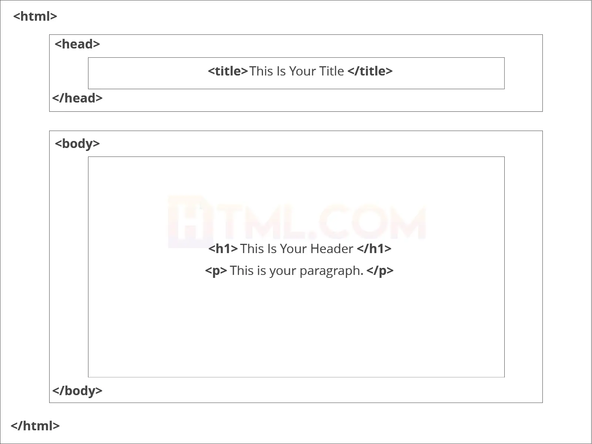

o que é HTML ?
html é a linguagem na qual a maioria dos sites são escritos.
O html é usado para criar páginas e torná-las funcionais.
Significa: Hyper Text Markup Language
Em português: Linguagem de marcação de hipertexto
o que são tags e atributos ?
Tags e atributos são a base do html.
Eles trabalham juntos, mas desempenham funções diferentes.
Construção basica de uma página html
Essas tags devem ser colocadas uma abaixo da outra no topo de cada página html.
